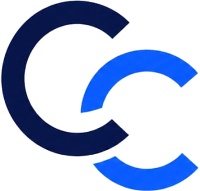

05 / 07Ketika alur kerja yang membedakan bisnis Anda justru dipaksa menyesuaikan template SaaS.
Anda perlu laporan gabungan, akses per peran, dan kepatuhan yang tidak bisa ditawar.
Umumnya setelah 18–24 bulan pemakaian rutin dengan jumlah pengguna tetap.
Kalau ketiganya belum terpenuhi, SaaS justru keputusan yang lebih hemat.